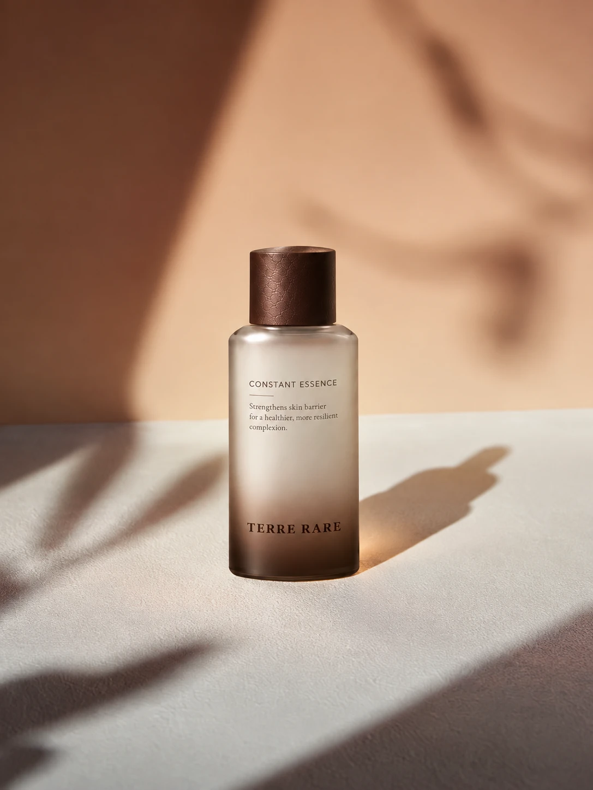
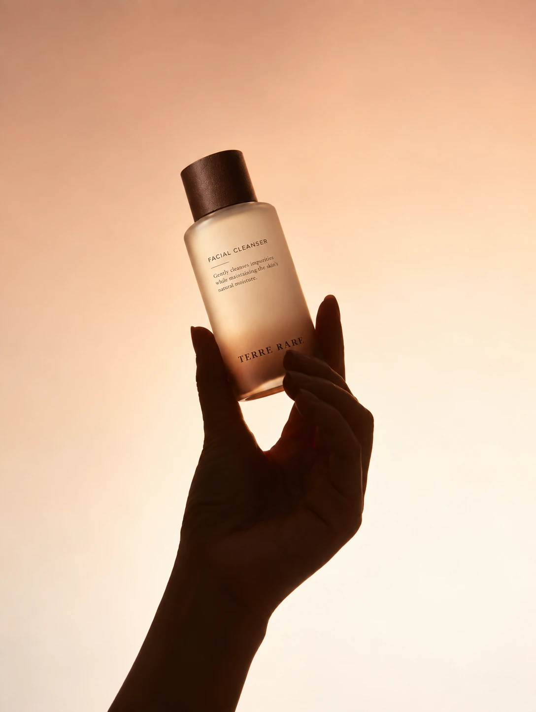
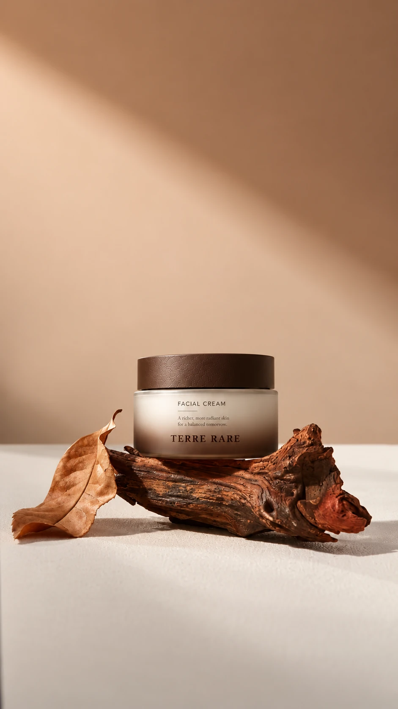
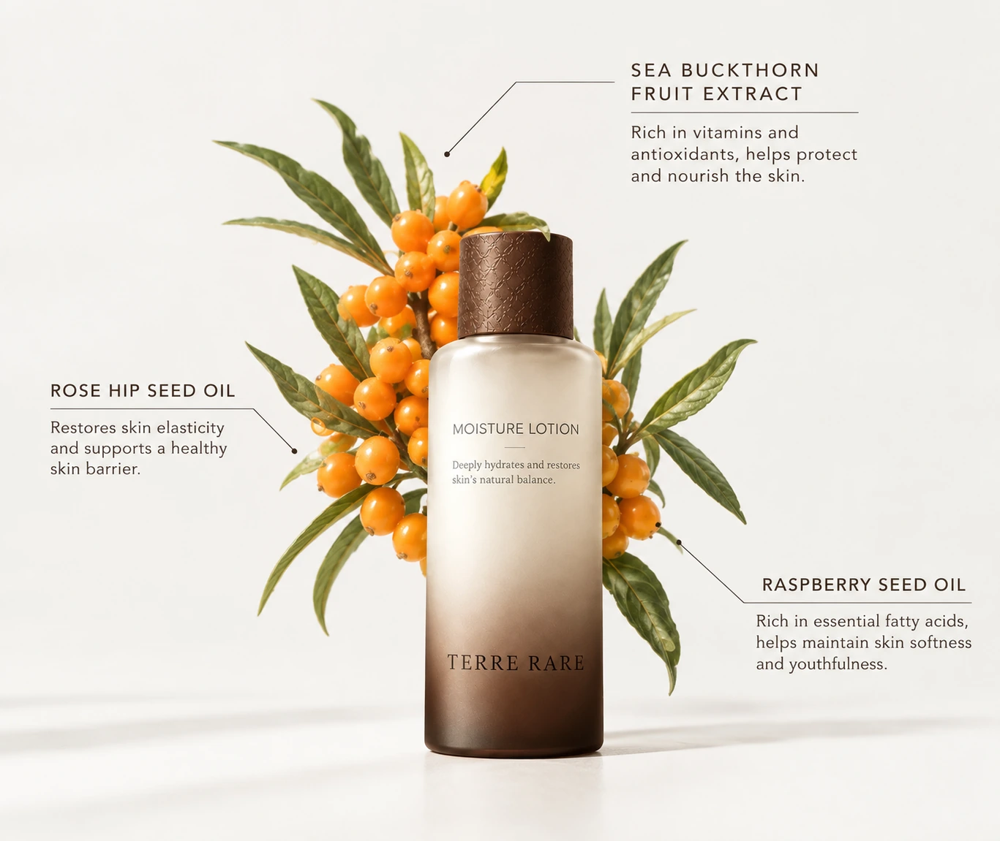

01 / Rarity
Rarity
Each ingredient has a specific origin. Our approach centres on seasonal harvests and limited quantities, with numbered batches designed to make scarcity verifiable.
Discover the ingredientsRarity, Essential and Transparency — the principles behind every Terre Rare choice.

Each ingredient has a specific origin. Our approach centres on seasonal harvests and limited quantities, with numbered batches designed to make scarcity verifiable.
Discover the ingredients
Just five products in our collection concept, each with an irreplaceable reason to exist. If a step doesn’t make a real difference, it doesn’t belong.
Explore our philosophy
Our vision is simple: enter a batch number to trace an ingredient’s origin and harvest date. Clear information, from source to skin. Transparency is our confidence.
Explore traceability
Formulation notesDiscover the three featured botanicals in Moisture Lotion: sea buckthorn fruit extract, rose hip seed oil and raspberry seed oil.
Read the ingredient story